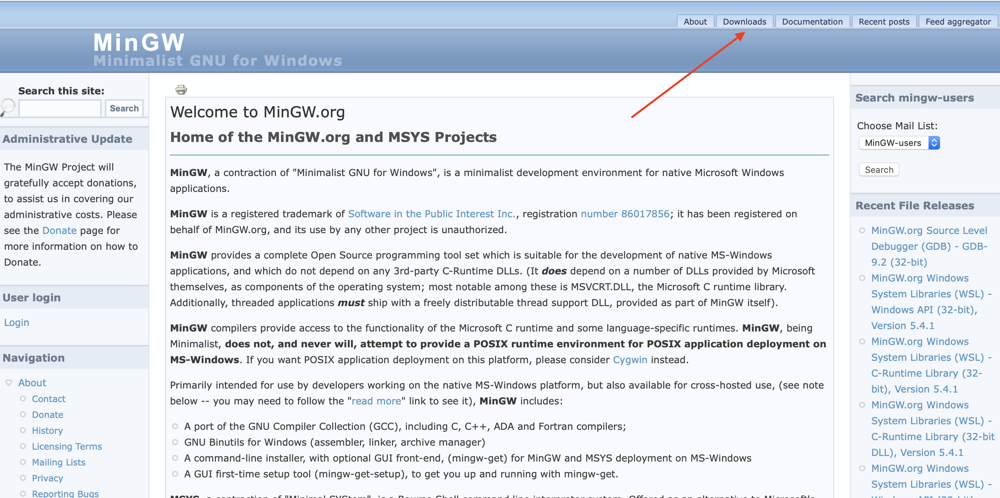
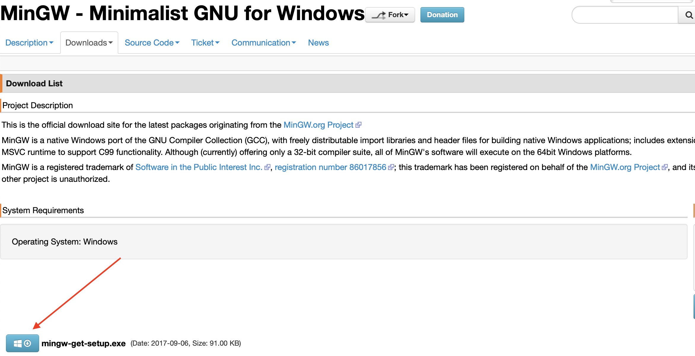
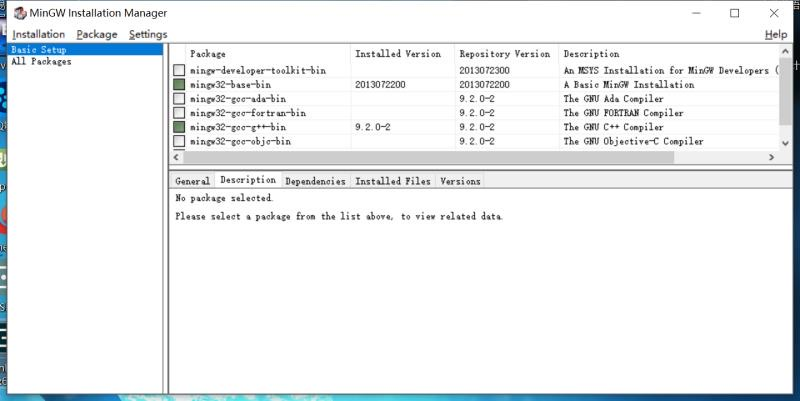
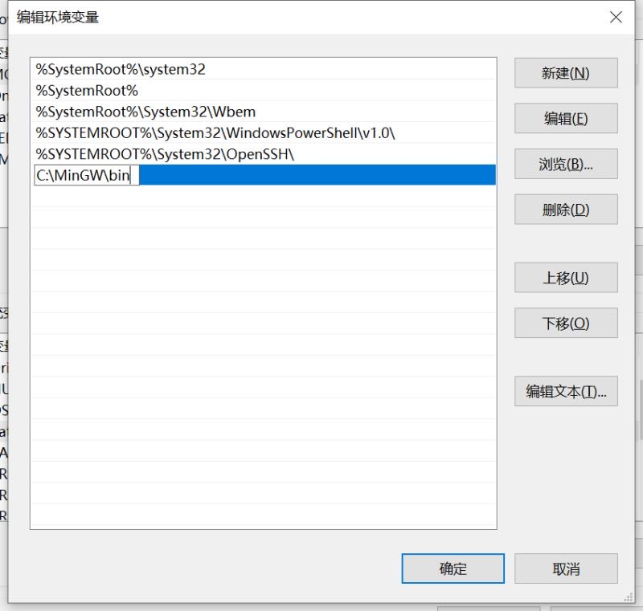
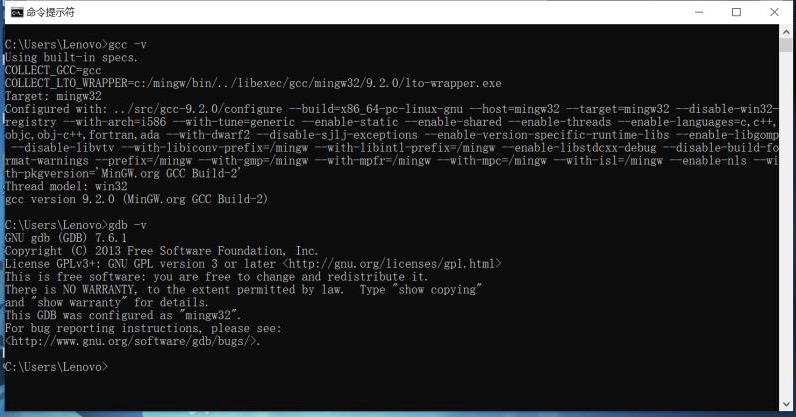
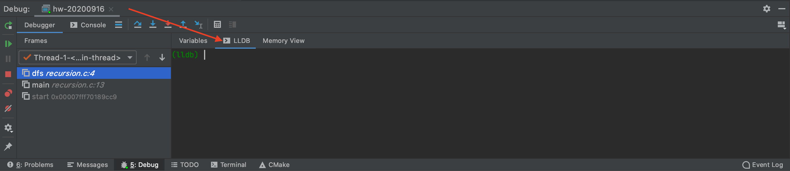
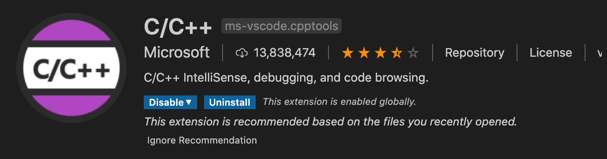
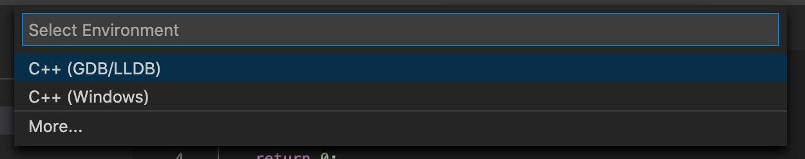
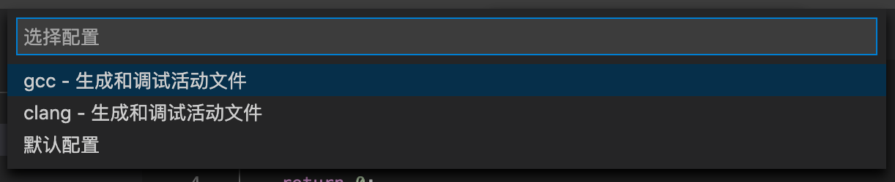
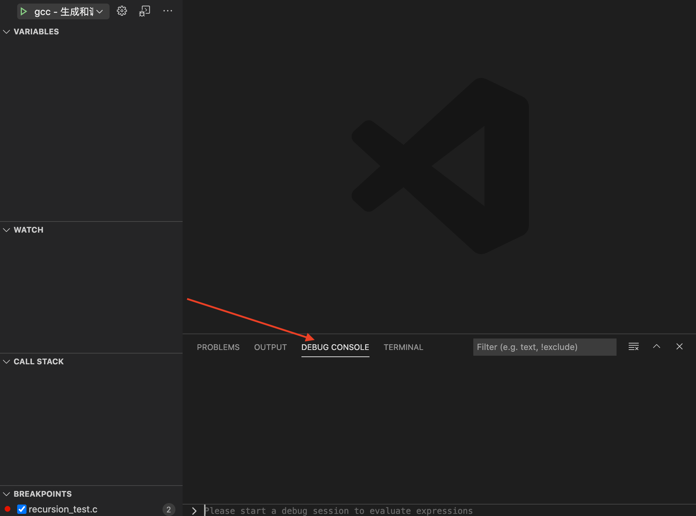

GDB使用指南
GDB使用指南
GDB（GNU Project Debugger）是一款UNIX及类UNIX环境下的C/C++调试工具。
GDB官网：GDB: The GNU Project Debugger
GDB和LLDB
LLDB是一款开源的具有REPL（Read-Evaluation-Print-Loop）特征的调试工具，相比GDB在部分场景下更加先进和高效。Xcode自4.3版本后默认内置了LLDB，因此macOS用户可以直接使用LLDB对程序进行调试。（当然macOS同样也可以安装GDB调试工具）
GDB与LLDB命令对照表：GDB to LLDB command map
WINDOWS下安装GCC和GDB
MinGW（Minimalist GNU For Windows）是Windows下的一个小型GNU工具集。新版MinGW中集成了GCC和GDB的相关工具，因此只需安装MinGW即可使用GCC和GDB。
下载MinGW及GCC包
首先前往MinGW官方网站：MinGW 并在Download界面下载MinGW管理工具。


安装MinGW管理工具并打开。

选择所需的工具集，点击左上角的Installation->Apply Changes即可安装。（由于受国内网络环境影响，可能会出现下载失败的情况，可以多尝试几次或使用其他网络连接方式下载）。若使用C/C++进行开发，通常仅需安装mingw32-base-bin及mingw32-gcc-g++-bin即可。
配置系统环境变量
安装完成后，我们需要配置系统环境变量使得其可以在CMD中执行。
右键此电脑->属性->高级系统设置->环境变量，在系统变量框中找到Path变量，选择编辑，在最后新增一行填入你的MinGW安装路径\bin，确定退出。

打开CMD，输入gcc -v及gdb -v，若显示相关版本信息，表明环境变量配置成功。

在其他IDE中调用GDB
CLion
CLion本身已经集成了十分完善的可视化调试工具，但如果想在CLion中使用GDB或LLDB调试程序同样十分方便。
使用通常的方法在需要的地方打上断点启动调试，在下方的Debug窗口中就可以看到GDB/LLDB窗口，在其中输入命令即可。

Visual Studio Code
VSCode本身并不自带GCC和GDB的相关功能，因此使用VSCode进行调试同样需要额外安装GDB/LLDB调试工具。不过，VSCode提供了一个可视化的C/C++调试插件，相比命令行调试会直观很多。该插件可直接在插件商店里搜索并安装。

和其他大型IDE类似，VSCode将一个目录视为一个项目，因此在创建项目时，你需要指定一个空的文件夹来存放项目文件（这也是一些人装了辅助插件却被提示要手动配置调试文件的一大重要原因）。在第一次运行程序时，选择Run->Start Debugging，在弹出的选项框中选择一个要使用的调试环境及编译环境，VSCode就会自动在当前的项目目录下创建相应的配置文件。（当然也可以手动指定配置文件，具体配置方法可参考VSCode官方文档）


随后即可在调试界面中看到相关的调试信息。你也可以在下方的Debug Console中输入相关的GDB/LLDB命令来进行进一步的调试。

GDB的基本使用
启动调试
若要使用GDB来调试程序，需要在使用GCC编译源文件的时候打开-g选项。
1 | |
Example:
gcc -g test.c -o test
若不打开调试选项，则在调试时无法添加断点。
使用gdb打开生成的可执行文件即可开始调试。
1 | |
GDB还可以关联正在运行的程序进行调试。我们可以通过ps命令查询目标进程的PID，随后进入GDB使用attach命令关联进程。
1 | |
Linux用户在这一过程过可能会遇到权限不足的情况。解决方法：切换至root用户，进入/etc/stsctl.d/10-ptrace.conf中将kernel.yama.ptrace_scpoe = 1改为kernel.yama.ptrace_scpoe = 0即可。
添加断点
通常在调试过程中，我们需要在程序的某个位置添加断点，并让程序运行到这一位置时自动暂停以分析程序当前的运行状态。在GDB环境下，我们可以通过break命令来快速添加断点。
1 | |
Example:
2(gdb) break test.c:5
(gdb) break main
有时我们希望程序在特定条件下中断，这个时候我们可以使用break+if或condition语句来设置条件断点。
1 | |
Example:
(gdb) break test.c:10 if a==5
1 | |
Example:
2(gdb) break test.c:10
(gdb) condition 1 a==5
我们可以使用info指令查看已设置断点的断点号及相关信息
1 | |
通过clear和delete命令可以删除已创建的断点。
1 | |
Example:
2(gdb) clear test:5
(gdb) delete 1
运行程序
对于不需要向main函数传递参数的程序，可以直接使用run指令开始运行程序。
1 | |
对于需要向main函数传递参数的程序，可以使用set args指令或直接在run后跟参数的方式运行程序。
1 | |
Example:
2(gdb) set args para1 para2 para3
(gdb) run
1 | |
Example:
(gdb) run para1 para2 para3
程序运行后，会一直运行至第一个断点处并暂停。若没有设置断点，则效果等同于直接运行程序。
当程序中断后，GDB提供了以下几种继续运行的指令。
1 | |
查看变量及内存
在程序中断时，GDB提供了一系列指令来查看当前变量及内存中的各种信息。
通过print指令可以打印变量或表达式的值
1 | |
Example:
2
3(gdb) print 'main'::a
(gdb) print 'test.c'::b
(gdb) print 'main'::*p
通过display命令可以使得每次程序中断时自动打印某个变量或表达式的值
1 | |
此外，我们还可以通过watch指令追踪某一变量，使其值发生改变时中断程序
1 | |
通过backtrace指令可以查看函数调用栈的存储情况及相关信息。
1 | |
更多其他命令的详细用法，可以通过help指令查询
1 | |
本博客所有文章除特别声明外，均采用 CC BY-SA 4.0 协议 ，转载请注明出处！